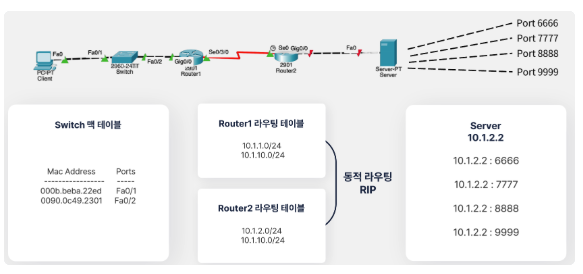
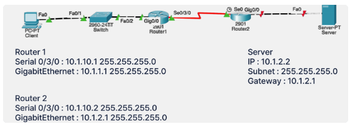
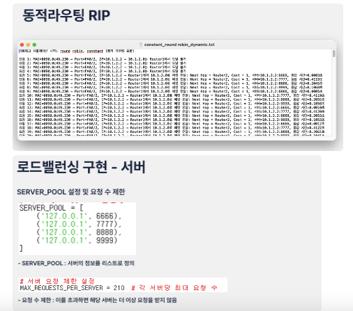
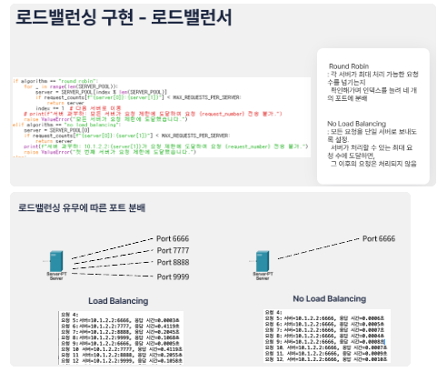
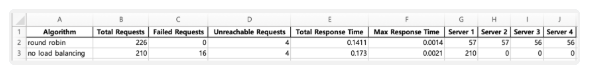

01. Project Overview
본 프로젝트는 Round Robin 알고리즘을 활용한 L4 Load Balancer를 직접 구현하고, 서버 간 트래픽 분산 효과와 시스템 성능 변화를 실험적으로 비교한 네트워크 프로젝트입니다.
TCP/UDP가 속한 Transport Layer에서 동작하는 L4 Load Balancer를 구성하여, 클라이언트 요청을 여러 서버에 순차적으로 분배했습니다. 이후 로드밸런싱을 적용한 경우와 적용하지 않은 경우를 동일한 요청 시퀀스로 비교하여 요청 성공률, 응답 시간, 서버별 부하 분산 정도를 분석했습니다.
02. Motivation & Goal
Research Motivation
네트워크 환경에서 서버 수가 증가하더라도 부하 분산 기법이 적용되지 않으면 특정 서버에 요청이 집중되어 응답 지연, 요청 실패, 시스템 불안정성이 발생할 수 있습니다.
이러한 문제를 해결하기 위해 실제 네트워크 계층에서 널리 사용되는 L4 Load Balancer와 Round Robin 알고리즘의 효과를 직접 구현하고, 실험을 통해 성능 차이를 확인하고자 했습니다.
Research Goal
- L4 계층에서 동작하는 Load Balancer를 Round Robin 알고리즘 기반으로 직접 구현
- 최소 3개 이상의 서버 환경에서 클라이언트 요청을 균등하게 분산
- 로드밸런싱 적용 여부에 따른 요청 성공/실패 수 비교
- 응답 시간과 서버별 요청 분포를 기반으로 성능 차이 분석
- Round Robin 기반 로드밸런싱의 안정성 및 성능 향상 효과 검증
03. My Role
Simulation Integration
팀원이 구현한 서버, 라우터, 로드밸런서 코드를 하나의 네트워크 시뮬레이션 구조로 통합했습니다.
Experiment Design
로드밸런싱 적용/미적용 환경을 공정하게 비교할 수 있도록 동일한 요청 시퀀스 기반 실험 구조를 설계했습니다.
Performance Metrics
총 요청 수, 실패 요청 수, 도달 불가 요청 수, 총 응답 시간, 서버별 요청 수 등 성능 지표를 정의했습니다.
Result Analysis
실험 로그와 엑셀 결과를 기반으로 Round Robin 방식의 부하 분산 효과와 성능 차이를 분석했습니다.
04. Core Concept
05. Network Architecture
본 프로젝트에서는 클라이언트 요청이 스위치, 라우터, 로드밸런서를 거쳐 여러 서버로 전달되는 네트워크 흐름을 시뮬레이션했습니다.

네트워크 구조 이미지

라우터 및 서버 설정
06. Implementation
구현 단계에서는 서버, 라우터, 로드밸런서 모듈을 통합하고, Round Robin 방식으로 요청이 서버에 분배되도록 구성했습니다.
Server
각 서버는 클라이언트 요청을 처리하고 처리 결과 및 응답 시간을 기록합니다.
Router
라우터는 요청 경로를 결정하고 라우팅 테이블을 기반으로 패킷 전달을 수행합니다.
Load Balancer
Round Robin 알고리즘을 통해 클라이언트 요청을 서버에 순차적으로 분배합니다.
Logging
요청 흐름, 실패 여부, 서버별 요청 수, 응답 시간을 기록하여 결과 분석에 활용했습니다.

구현 화면 1

구현 화면 2
07. Experiment Setup
로드밸런싱 적용 여부에 따른 성능 차이를 공정하게 비교하기 위해 동일한 요청 시퀀스를 두 실험 환경에 적용했습니다.
08. Experiment Results
Round Robin 기반 로드밸런싱을 적용한 경우와 로드밸런싱을 적용하지 않은 경우를 비교했습니다.
Round Robin - 성공 요청
총 230건 중 도달 불가 4건을 제외한 226건이 성공적으로 처리되었습니다.
Round Robin - 실패 요청
서버 과부하로 인한 실패 요청은 발생하지 않았습니다.
미적용 - 실패 요청
로드밸런싱을 적용하지 않은 경우 모든 요청이 서버 1번에 집중되어 20건이 실패했습니다.
응답 시간 비교
Round Robin 적용 시 총 응답 시간은 0.14초로, 미적용 방식의 0.17초보다 짧았습니다.
| 구분 | 총 요청 수 | 성공 요청 | 실패 요청 | 특징 | 총 응답 시간 |
|---|---|---|---|---|---|
| Round Robin 적용 | 230 | 226 | 0 | 4개 서버에 균등 분배 | 0.14초 |
| 로드밸런싱 미적용 | 230 | 210 | 20 | 서버 1번에 요청 집중 | 0.17초 |

Round Robin 적용/미적용 성능 비교 결과
09. Insight
본 실험을 통해 로드밸런싱은 단순히 요청을 나누는 기능을 넘어, 서버 과부하를 방지하고 전체 시스템의 안정성과 응답 성능을 향상시키는 핵심 네트워크 기술임을 확인했습니다.
- Round Robin 적용 시 요청이 균등하게 분배되어 특정 서버의 과부하를 방지할 수 있었습니다.
- 로드밸런싱 미적용 시 특정 서버에 요청이 집중되어 실패 요청과 응답 지연이 발생했습니다.
- 동일한 요청 시퀀스를 사용함으로써 두 방식의 성능 차이를 공정하게 비교할 수 있었습니다.
- 네트워크 시스템에서는 알고리즘 자체뿐 아니라 실험 조건과 성능 지표 설계가 중요하다는 점을 배웠습니다.
10. Source Code
프로젝트 코드 또는 실험 자료는 아래 GitHub 저장소에서 확인할 수 있습니다.
GitHub Repository 보기 →